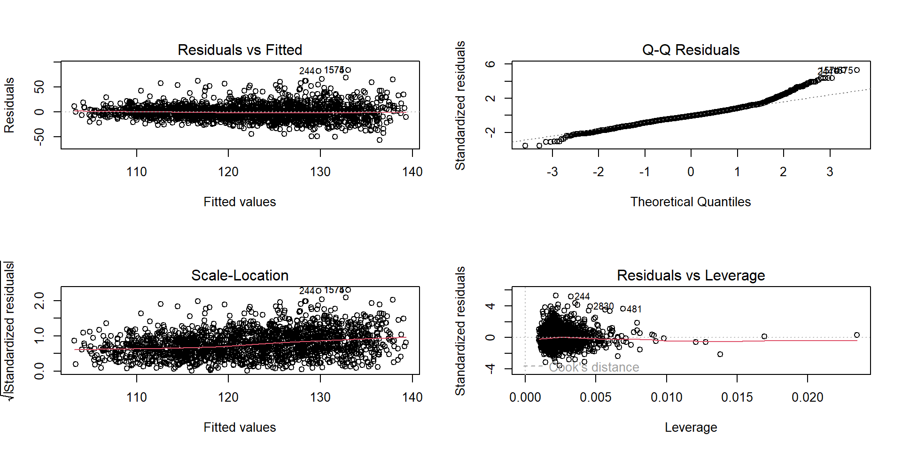

Modelo de regressão logística e Modelos de risco proporcionais (Cox)
Modelos prognósticos
Modelos prognósticos
Prognóstico significa prever, predizer ou estimar a probabilidade ou risco de condições futuras.
Na área da saúde, prognóstico comumente relaciona-se à probabilidade ou risco de um indivíduo desenvolver um particular estado de saúde (um desfecho) ao longo de um período de tempo específico, baseado na presença ou ausência de um perfil clínico.
Regressão linear, logística e de risco (análise de sobrevida) são métodos comuns utilizados na pesquisa clínica para relatar covariáveis e desfechos.
Modelos prognósticos
A regressão linear é o método padrão para desfechos contínuos.
A regressão logística é adequada para desfechos binários
Quando desfechos binários são medidos prospectivamente, eles também são associados com um tempo para o evento. Neste caso, a regressão logística ou a análise de sobrevida podem ser adequadas.
Modelos de regressão linear
Na regressão linear, ajustamos um modelo do tipo
\[Y = \beta_0 + \beta_1X_1+ \dots + \beta_iX_i + \varepsilon\]
- Pressuposto importante: a variável \(Y\) era de natureza contínua e seguia uma distribuição normal.
O modelo se preocupava em estimar (ou predizer) o valor médio de \(Y\) dado um certo conjunto de valores das variáveis explicativas.
Modelos de regressão linear
Em um modelo de regressão linear, as variáveis explicativas podem ser contínuas ou dicotômicas.
O coeficiente para uma covariável contínua depende, em grande parte, das unidades, e a magnitude só pode ser interpretada em um contexto clínico.
Se um pesquisador quer saber a mudança esperada na resposta para um aumento de 10 unidades (ou qualquer outro aumento) em uma covariável contínua, ele pode simplesmente multiplicar o coeficiente (e os limites de confiança) por 10.
Para covariáveis dicotômicas, o coeficiente é interpretado como a diferença na resposta que seria vista, em média, entre os dois níveis da covariável.
Exemplo
Descrição da base de dados
O NHANES (National Health and Nutrition Examination Survey) é um estudo populacional dos EUA que contém dados de saúde.
Vamos estimar um modelo de regressão linear múltiplo usando os dados do NHANES, incluindo covariáveis clínicas e demográficas.
Descrição da base de dados
Usaremos a pressão arterial sistólica (PAS) como variável dependente e as seguintes variáveis independentes:
- IMC (quanto maior o IMC, maior pode ser a pressão arterial?)
- Idade (o envelhecimento está associado ao aumento da PAS?)
- Sexo (homens têm maior PAS que mulheres?)
- Horas de sono à noite (SleepHrsNight) (dormir mais pode diminuir a PAS?)
- Nível de colesterol total (TotChol) (colesterol elevado está associado a maior PAS?)
- Tabagismo (SmokeNow) (fumantes têm PAS mais alta?)
Preparação
Carregando os pacotes R
Carregando os dados
Manipulação dos dados
# Renomear variáveis para facilitar
colnames(dados) <- c("PAS", "IMC", "Idade", "Sexo", "Colesterol", "HorasDeSonoNoite", "Fumante")
# Transformar Sexo e Fumante em fatores
dados$Sexo <- as.factor(dados$Sexo)
dados$Fumante <- as.factor(dados$Fumante)
# Estrutura dos dados
dados %>%
str()tibble [2,940 × 7] (S3: tbl_df/tbl/data.frame)
$ PAS : int [1:2940] 113 113 113 112 111 127 128 152 122 144 ...
$ IMC : num [1:2940] 32.2 32.2 32.2 30.6 23.7 ...
$ Idade : int [1:2940] 34 34 34 49 66 58 33 60 57 44 ...
$ Sexo : Factor w/ 2 levels "female","male": 2 2 2 1 2 1 2 2 1 2 ...
$ Colesterol : num [1:2940] 3.49 3.49 3.49 6.7 4.99 4.78 5.59 6.39 5.04 5.61 ...
$ HorasDeSonoNoite: int [1:2940] 4 4 4 8 7 5 6 6 8 4 ...
$ Fumante : Factor w/ 2 levels "No","Yes": 1 1 1 2 1 2 1 1 1 2 ...Ajuste do modelo
# Ajustar modelo de regressão linear múltiplo
modelo_multiplo <- lm(PAS ~ IMC + Idade + Sexo + Colesterol + HorasDeSonoNoite + Fumante, data = dados)
# Resumo do modelo
summary(modelo_multiplo)
Call:
lm(formula = PAS ~ IMC + Idade + Sexo + Colesterol + HorasDeSonoNoite +
Fumante, data = dados)
Residuals:
Min 1Q Median 3Q Max
-56.440 -9.003 -1.070 8.170 83.997
Coefficients:
Estimate Std. Error t value Pr(>|t|)
(Intercept) 88.82356 2.63293 33.736 < 2e-16 ***
IMC 0.17376 0.04634 3.750 0.000181 ***
Idade 0.42727 0.01868 22.876 < 2e-16 ***
Sexomale 4.91074 0.59226 8.292 < 2e-16 ***
Colesterol 1.46760 0.27216 5.392 7.5e-08 ***
HorasDeSonoNoite -0.42090 0.21150 -1.990 0.046674 *
FumanteYes 0.63493 0.62894 1.010 0.312811
---
Signif. codes: 0 '***' 0.001 '**' 0.01 '*' 0.05 '.' 0.1 ' ' 1
Residual standard error: 15.86 on 2933 degrees of freedom
Multiple R-squared: 0.1956, Adjusted R-squared: 0.194
F-statistic: 118.9 on 6 and 2933 DF, p-value: < 2.2e-16Avaliação do modelo
Interpretação do modelo
| Variável | Coeficiente (β) | p-valor | Interpretação |
|---|---|---|---|
| Intercepto | 88,82 | < 0,001 | Valor médio da PAS quando todas as variáveis preditoras são zero. |
| IMC | 0,17 | < 0,001 | A cada aumento de 1 unidade no IMC, a PAS aumenta, em média, 0,17 mmHg, ajustado para as demais variáveis. |
| Idade | 0,42 | < 0,001 | A cada ano a mais de idade, a PAS aumenta 0.42 mmHg. |
| Sexo (Masculino) | 4,91 | < 0,001 | O sexo masculino foi associado a uma PAS 4,91 mmHg maior que no sexo feminino, em média. |
| Colesterol | 1,47 | < 0,001 | Para cada aumento de 1 mg/dL no colesterol, a PAS aumenta 1,47 mmHg. |
| Horas de sono | -0,42 | 0,047 | Para cada aumento de 1 h dormida a noite, a PAS diminui 0,42 mmHg. |
| Fumante (Sim) | 0,64 | 0,312 | Não significativo (p > 0.05), indicando que o tabagismo não teve efeito estatisticamente relevante na PAS. |
Variável dependente (desfecho) binária
E se a variável dependente \(y\) for binária?
- Doença (presente = 1/ausente = 0)
- Morto = 1/Vivo = 0
Aqui, \(Y = 1\) corresponde ao sucesso, ou seja, a ocorrência do evento e \(Y = 0\) corresponde ao fracasso, ou seja, à não ocorrência do evento.
Temos então que a média de \(Y\) é igual a \(p\), sendo \(p\) a proporção de vezes que \(Y\) assume o valor 1. Assim,
\[p = P(Y=1) = P(\text{sucesso})\]
Variável dependente (desfecho) binária
A regressão logística é um modelo estatístico que permite estimar a probabilidade \(p\) da ocorrência de um determinado desfecho categórico (Y) em função de um ou mais preditores (X), que podem ser contínuos ou categóricos.
Vamos a um exemplo…
Variável dependente (desfecho) binária
Considere a população de bebês com baixo peso ao nascer (definido como < 1750g) que estão confinados em uma unidade de tratamento intensivo neonatal, entubados durante as primeiras 12 semanas de vida e sobreviventes por, no mínimo, 28 dias.
Na amostra de 223 bebês extraída da população original, 76 foram diagnosticados com displasia broncopulmonar (BPD). Os restantes 147 não tinham a doença.
Seja \(Y\) uma variável aleatória dicotômica, de forma que
\[Y = \begin{cases} 0 & \text{Ausência de BPD} \\ 1 & \text{Presença de BPD} \end{cases}\]
Variável dependente (desfecho) binária
A probabilidade estimada de que um bebê dessa população desenvolva BPD é a proporção amostral de bebês com BPD, ou seja,
\[\hat{p} = \dfrac{76}{223} = 0,341\]
Podemos suspeitar que alguns fatores, maternos ou neonatais, devem afetar a probabilidade de um bebê em particular desenvolver BPD.
O conhecimento da presença ou ausência desses fatores pode:
aumentar a precisão de nossa estimativa de \(p\),
desenvolverintervenções para reduzir essa probabilidade.
Variável dependente (desfecho) binária
- Um fator interessante poderia ser o peso de nascimento de um bebê, que chamaremos de \(X\).
- Se a variável \(Y\) fosse contínua, poderíamos começar a análise contruindo um diagrama de dispersão entre as variáveis \(X\) e \(Y\).


| Peso(g) | n | BPD | p |
|---|---|---|---|
| 0-950 | 68 | 49 | 0,721 |
| 951-1350 | 80 | 18 | 0,225 |
| 1351-1750 | 75 | 9 | 0,120 |
| 223 | 76 | 0,341 | |
Variável dependente (desfecho) binária
- Parece que a probabilidade de desenvolver BPD aumenta à medida que o peso do bebê ao nascer diminui e vice-versa.
- Como parece haver uma relação entre estas duas variáveis, podemos usar o peso ao nascer de uma criança para nos ajudar a prever a probabilidade de que ela desenvolva BPD.
Função logística
A primeira estratégia poderia ser ajustar um modelo da forma
\[p = \beta_0 + \beta_1 x\] onde \(x\) representa o peso ao nascer.
Sob inspeção, este modelo não é viável, uma vez que \(p\) é uma probabilidade, podendo assumir, portanto, valores entre 0 e 1.
O termo \(\alpha + \beta x\), ao contrário, pode assumir valores fora desse intervalo.
Função logística
Uma alternativa seria ajustar o modelo
\[p = e^{\beta_0 + \beta_1 x}\]
Essa expressão garante que a estimativa de \(p\) é sempre positiva.
No entanto, este modelo também é inadequado, uma vez que pode produzir valores maiores que 1.
Função logística
Podemos então, ajustar um modelo da forma
\[p = \dfrac{e^{\beta_0 + \beta_1 x}}{1 + e^{\beta_0 + \beta_1 x}}\]
Esta expressão, conhecida como função logística, não admite valores negativos nem maiores que 1.
Função logística
Lembre-se de que, se um evento ocorre com probabilidade \(p\), a chance a seu favor é de \(\dfrac{p}{1-p}\) para 1.
Assim, se um sucesso ocorre com probabilidade
\[p = \dfrac{e^{\beta_0 + \beta_1 x}}{1 + e^{\beta_0 + \beta_1 x}},\]
Função logística
a chance em favor de sucesso é
\[\dfrac{p}{1-p} = \dfrac{\dfrac{e^{\beta_0 + \beta_1 x}}{1 + e^{\beta_0 + \beta_1 x}}}{\dfrac{1}{1 + e^{\beta_0 + \beta_1 x}}} = e^{\beta_0 + \beta_1 x}\]
Tomando o logaritmo natural de cada lado dessa equação,
\[\underbrace{\ln\left ( \frac{p}{1-p} \right)}_\text{logit} = \ln(e^{\beta_0 + \beta_1 x}) = \beta_0 + \beta_1 x\]
Modelo de regressão logística
Modelar uma probabilidade \(p\) com uma função logística é equivalente a ajustar um modelo de regressão linear onde a variável dependente contínua \(y\) foi substituída pelo logaritmo neperiano da chance de ocorrência de um evento dicotômico.
Em vez de assumir que a relação entre \(p\) e \(X\) é linear, assume-se que a relação entre \(\ln\left ( \frac{p}{1-p} \right)\) e \(X\) é linear.
Essa técnica é conhecida como regressão logística.
Modelo de regressão logística
Os parâmetros do modelo (\(\beta\)’s) são estimados usando o método de máxima verossimilhança, que busca maximizar a probabilidade de observar os dados dados os parâmetros.
Este processo envolve iterativamente ajustar os coeficientes para melhor se alinhar com os dados observados.
\[\ln\left ( \frac{\hat{p}}{1-\hat{p}} \right) = \hat{\beta}_0 + \hat{\beta}_1 x\]
Modelo de regressão logística
Voltando ao exemplo, para a amostra de 223 bebês com baixo peso ao nascer, a equação da regressão logística estimada é
\[\ln\left ( \frac{\hat{p}}{1-\hat{p}} \right) = 4,0343 - 0,0042 x\]
- Interpretação: O coeficiente do peso indica que, para cada aumento de 1 grama no peso ao nascer, o logaritmo da chance de que um bebê desenvolva BPD diminui de 0,0042, em média.
Qual a probabilidade de que um bebê, retirado desta população pesando 750g ao nascer, irá desenvolver BPD?
\[ \begin{eqnarray*} \ln\left ( \frac{\hat{p}}{1-\hat{p}} \right) = 4,0343 - 0,0042 x \end{eqnarray*} \]
Trocando-se \(x\) por 750, temos
\[ \begin{eqnarray*} \ln\left ( \frac{\hat{p}}{1-\hat{p}} \right) = 4,0343 - 0,0042 \times 750 = 0,8843 \end{eqnarray*} \]
Modelo de regressão logística
Aplicando a função exponencial em ambos os lados, temos
\[ \begin{eqnarray*} \ln\left ( \frac{\hat{p}}{1-\hat{p}} \right) &=& 0,8843 \\ \frac{\hat{p}}{1-\hat{p}} &=& e^{0,8843} = 2,4113 \end{eqnarray*} \]
Modelo de regressão logística
Isolando \(\hat{p}\):
\[ \begin{eqnarray*} \frac{\hat{p}}{1-\hat{p}} &=& 2,4113 \\ \hat{p} &=& 2,4113 - 2,4113 \hat{p} \\ \hat{p} + 2,4113 \hat{p} &=& 2,4113 \\ (1 + 2,4113)\hat{p} &=& 2,4113 \\ \hat{p} &=& \dfrac{2,4113}{1 + 2,4113} = 0,708 \end{eqnarray*} \]
Modelo de regressão logística
A probabilidade estimada de que uma criança, que pesa 750g ao nascer, desenvolva BPD é de 0,708.
Se calculássemos a probabilidade estimada \(\hat{p}\) para cada valor observado dos pesos ao nascer e plotássemos \(\hat{p} \times\) o peso, teríamos

Exemplo
Descrição da base de dados
O NHANES (National Health and Nutrition Examination Survey) é um estudo populacional dos EUA que contém dados de saúde.
Vamos estimar um modelo de regressão logística usando os dados do NHANES, incluindo covariáveis clínicas e demográficas.
Descrição da base de dados
Usaremos Diabetes como variável dependente e as seguintes variáveis independentes:
- PAS (a pressão arterial sistólica está associada à diabetes?)
- IMC (IMC está associado à diabetes?)
- Idade (o envelhecimento está associado à diabetes?)
- Sexo (homens têm maior risco de ter diabetes que mulheres?)
- Horas de sono à noite (SleepHrsNight) (dormir mais influencia no fato de ter diabetes?)
- Nível de colesterol total (TotChol) (colesterol elevado está associado à diabetes?)
- Tabagismo (SmokeNow) (fumantes têm maior risco de ter diabetes?)
Preparação
Carregando os pacotes R
Carregando os dados
# Selecionar variáveis relevantes e remover NAs
dados <- NHANES %>%
filter(!is.na(BPSysAve) & !is.na(BMI) & !is.na(Age) & !is.na(Gender) &
!is.na(TotChol) & !is.na(SleepHrsNight) & !is.na(SmokeNow) & !is.na(Diabetes)) %>%
dplyr::select(BPSysAve, BMI, Age, Gender, TotChol,SleepHrsNight, SmokeNow, Diabetes)Manipulação dos dados
# Renomear variáveis para facilitar
colnames(dados) <- c("PAS", "IMC", "Idade", "Sexo", "Colesterol", "HorasDeSonoNoite", "Fumante", "Diabetes")
# Transformar Sexo e Fumante em fatores
dados$Sexo <- as.factor(dados$Sexo)
dados$Fumante <- as.factor(dados$Fumante)
dados$Diabetes <- as.factor(dados$Diabetes)
# Estrutura dos dados
dados %>%
str()tibble [2,938 × 8] (S3: tbl_df/tbl/data.frame)
$ PAS : int [1:2938] 113 113 113 112 111 127 128 152 122 144 ...
$ IMC : num [1:2938] 32.2 32.2 32.2 30.6 23.7 ...
$ Idade : int [1:2938] 34 34 34 49 66 58 33 60 57 44 ...
$ Sexo : Factor w/ 2 levels "female","male": 2 2 2 1 2 1 2 2 1 2 ...
$ Colesterol : num [1:2938] 3.49 3.49 3.49 6.7 4.99 4.78 5.59 6.39 5.04 5.61 ...
$ HorasDeSonoNoite: int [1:2938] 4 4 4 8 7 5 6 6 8 4 ...
$ Fumante : Factor w/ 2 levels "No","Yes": 1 1 1 2 1 2 1 1 1 2 ...
$ Diabetes : Factor w/ 2 levels "No","Yes": 1 1 1 1 1 1 1 1 1 2 ...Ajuste do modelo
# Ajustar modelo de regressão logistica
modelo_logistico <- glm(Diabetes ~ ., data = dados, family = binomial(link='logit'))
# Resumo do modelo
summary(modelo_logistico)
Call:
glm(formula = Diabetes ~ ., family = binomial(link = "logit"),
data = dados)
Coefficients:
Estimate Std. Error z value Pr(>|z|)
(Intercept) -7.746757 0.721204 -10.741 < 2e-16 ***
PAS 0.003845 0.003409 1.128 0.25925
IMC 0.104682 0.009341 11.206 < 2e-16 ***
Idade 0.051445 0.004731 10.874 < 2e-16 ***
Sexomale 0.317999 0.131212 2.424 0.01537 *
Colesterol -0.198636 0.061478 -3.231 0.00123 **
HorasDeSonoNoite 0.023144 0.045036 0.514 0.60733
FumanteYes -0.183802 0.145628 -1.262 0.20690
---
Signif. codes: 0 '***' 0.001 '**' 0.01 '*' 0.05 '.' 0.1 ' ' 1
(Dispersion parameter for binomial family taken to be 1)
Null deviance: 2101.4 on 2937 degrees of freedom
Residual deviance: 1734.2 on 2930 degrees of freedom
AIC: 1750.2
Number of Fisher Scoring iterations: 6Avaliando odds ratio
Call:
logitor(formula = Diabetes ~ ., data = dados)
Odds Ratio:
OddsRatio Std. Err. z P>|z|
PAS 1.0038527 0.0034216 1.1282 0.259253
IMC 1.1103572 0.0103724 11.2061 < 2.2e-16 ***
Idade 1.0527909 0.0049805 10.8744 < 2.2e-16 ***
Sexomale 1.3743748 0.1803346 2.4235 0.015370 *
Colesterol 0.8198486 0.0504025 -3.2310 0.001234 **
HorasDeSonoNoite 1.0234136 0.0460907 0.5139 0.607328
FumanteYes 0.8321009 0.1211769 -1.2621 0.206900
---
Signif. codes: 0 '***' 0.001 '**' 0.01 '*' 0.05 '.' 0.1 ' ' 1Interpretação do modelo
| Variável | OddsRatio | p-valor | Interpretação |
|---|---|---|---|
| PAS | 1,004 | 0,259 | Não significativo (p-valor > 0,05) indicando que a PAS não teve efeito estatisticamente relevante no fato de ter diabetes. |
| IMC | 1,110 | < 0,001 | A cada aumento de 1 unidade no IMC, a chace do paciente ter diabetes aumenta em 11%, mantendo as outras variáveis constantes. |
| Idade | 1,05 | < 0,001 | A cada ano a mais de idade, a chace do paciente ter diabetes aumenta em 5%, mantendo as outras variáveis constantes. |
| Sexo (Masculino) | 1,37 | < 0,015 | A chance de um paciente do sexo masculino ter diabetes é 37% maior que do sexo feminino. |
| Colesterol | 0,82 | 0,001 | Para cada aumento de 1 mg/dL no colesterol, a chace do paciente ter diabetes diminui em 18%, mantendo as outras variáveis constantes. |
| Horas de sono | 1,02 | 0,607 | Não significativo (p > 0.05), indicando que o horas de sonoo não teve efeito estatisticamente relevante no fato do paciente ter diabetes. |
| Fumante (Sim) | 0,83 | 0,207 | Não significativo (p > 0.05), indicando que o tabagismo não teve efeito estatisticamente relevante no fato do paciente ter diabetes. |